La ficha
Cómo leer una ficha.
Cada especie en Tawari tiene su ficha. Esta es la de la mariposa monarca, de arriba abajo, con lo que hace cada parte.
La foto y el nombre
Arriba, las fotos con licencia abierta: desliza para ver más. Su nombre común, el científico debajo, y el dibujo de su familia en el círculo. La etiqueta UICN dice su estado de conservación; tócala y te explica qué significa.
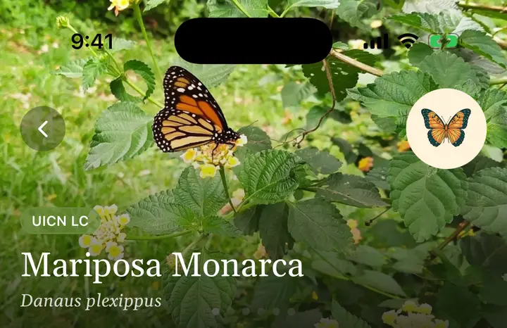
El otro nombre y una frase para recordarla
Su nombre en el otro idioma, su familia y su orden. Luego, en cursiva, lo más sorprendente de la especie, dicho en una frase.
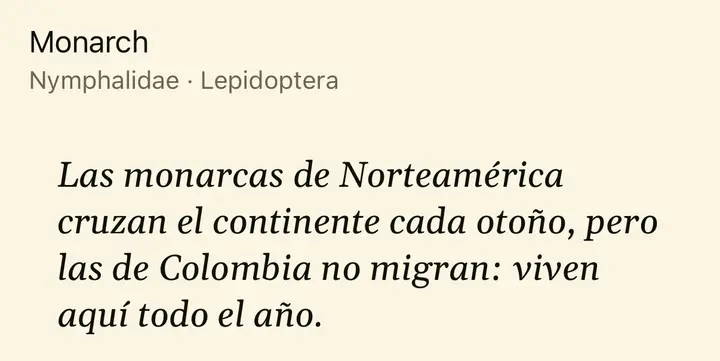
El resumen
Qué es, cómo es y dónde vive, en pocas líneas. Si una palabra técnica lleva un subrayado punteado, tócala y la ficha te dice qué significa.
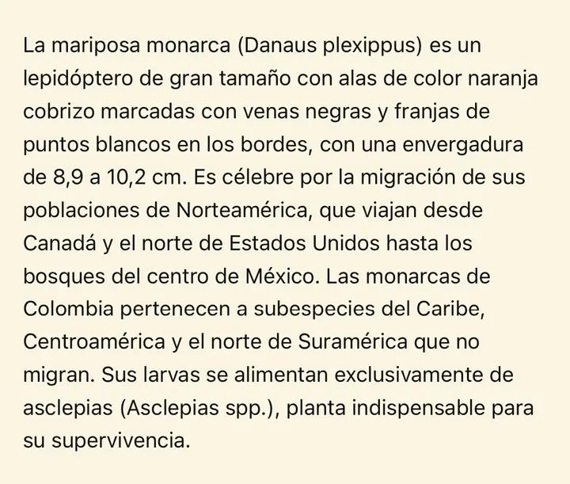
Cómo reconocerla
Primero las marcas de campo: lo que miras para saber que es ella y no otra parecida. Después, la descripción completa: tamaño, colores, cómo se distinguen machos y hembras, y sus etapas.
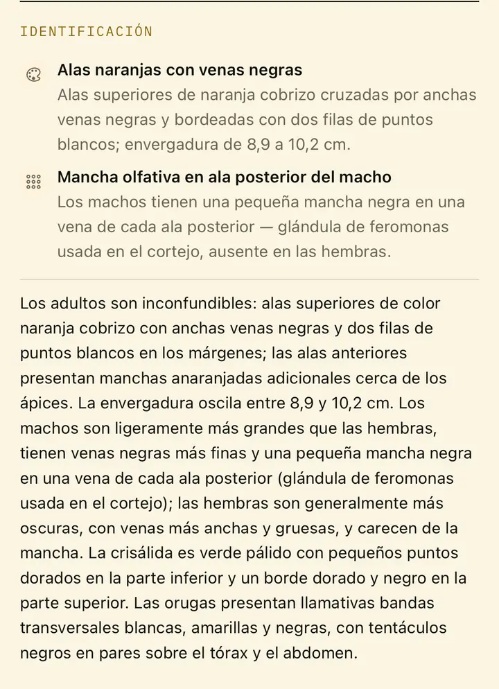
Tus avistamientos
Cada vez que la registras aparece aquí, con fecha y lugar. Es tu historia con esta especie.
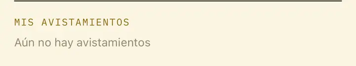
Con quién vive
Quién come a quién: de qué se alimenta, quién se la come y dónde vive. Solo aparecen relaciones con una fuente revisada, y cada una dice de dónde sale.
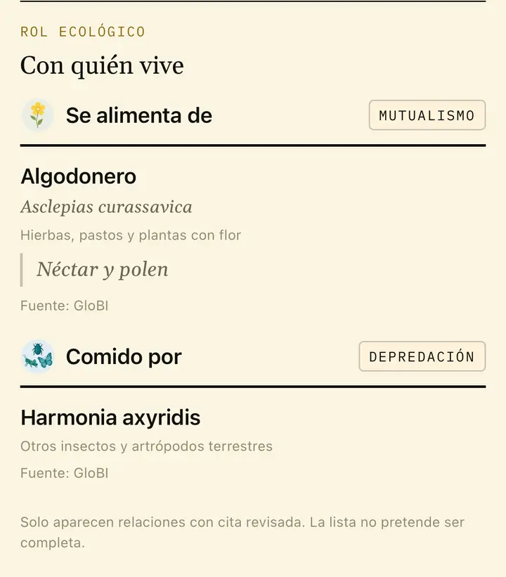
Su papel en el ecosistema
Sus relaciones, su estado de conservación y lo que hace en el lugar donde vive, con las cifras de quien las midió.
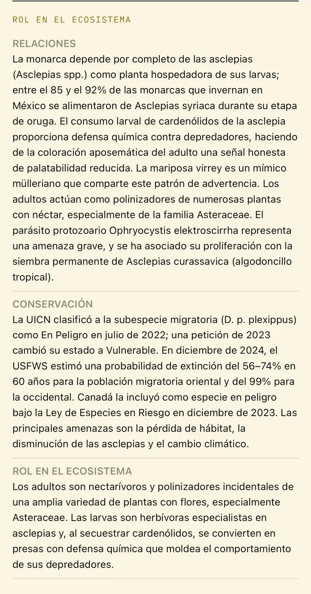
Usos culturales
Lo que la especie significa para la gente: tradiciones, nombres populares, usos. Siempre con el pueblo o el lugar que lo cuenta. Si hay usos medicinales, la ficha los cuenta como historia, nunca como consejo.
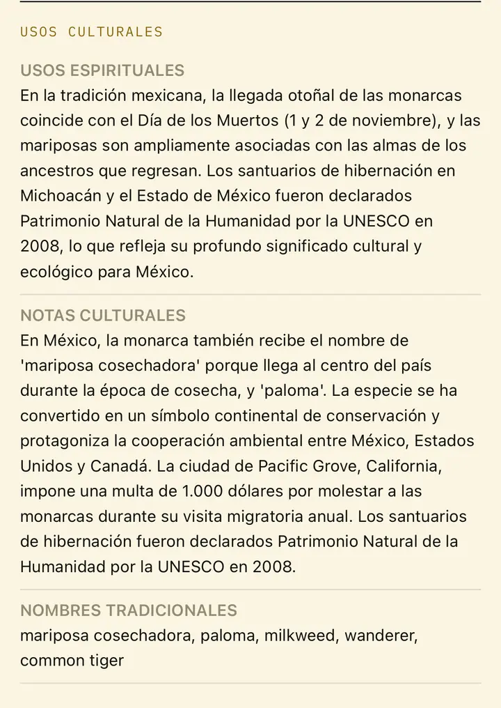
Lecturas relacionadas
Artículos científicos que nombran la especie, para quien quiera ir más lejos. «Acceso libre» marca los que se pueden leer gratis.
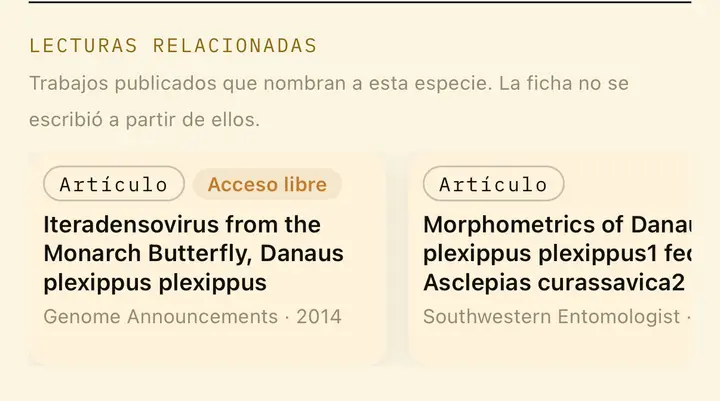
Su grupo
Lo que comparte con sus parientes, y un enlace a la página completa del grupo en Aprender.
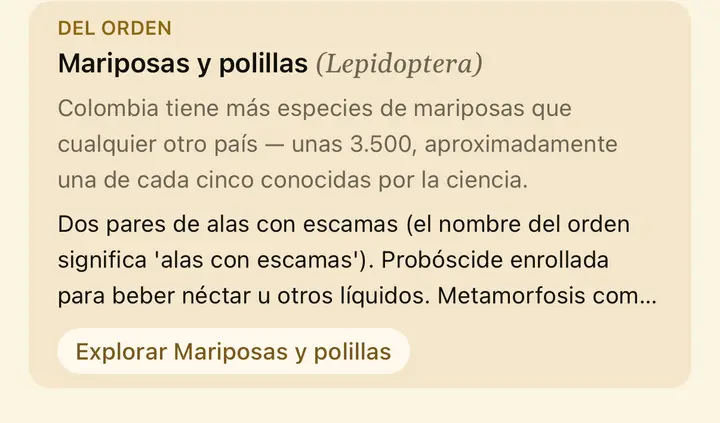
Dónde vive
Los ecosistemas de Colombia donde se encuentra. Cada uno abre su propia página.
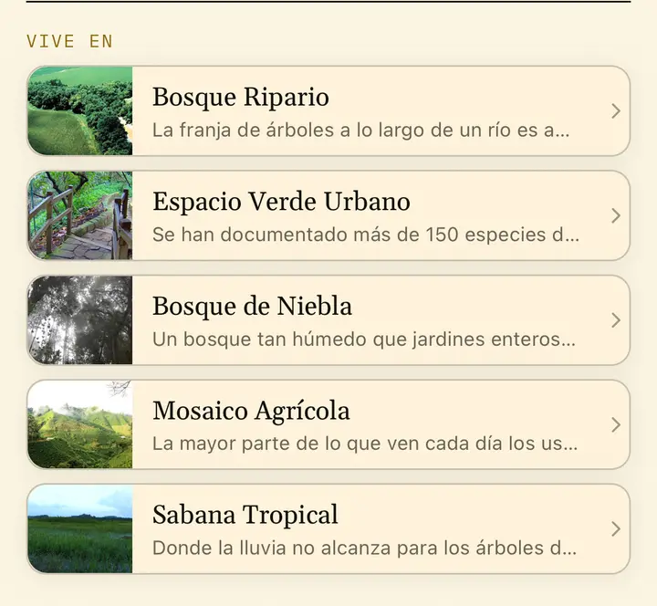
Su lugar en el árbol de la vida
Reino, clase, orden, familia y género, de lo general a lo particular.
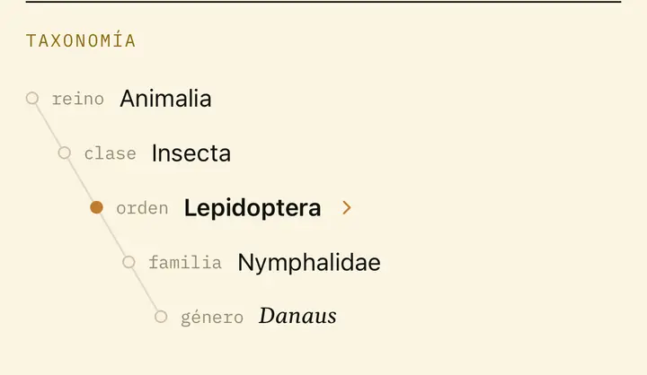
Dónde encontrarla
Lugares de Tawari donde se ha registrado. Toca uno para ver quién más vive allí.
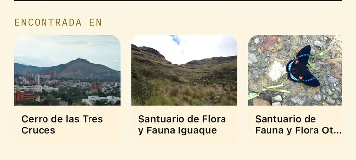
Su distribución
Todos los registros de la especie, en el mapa de GBIF.
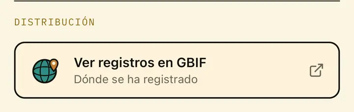
¿Algo no cuadra?
Si ves un error, cuéntanos desde aquí. Cada reporte llega al equipo.
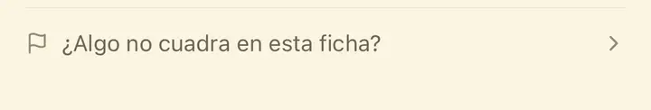
Las fuentes
Cada foto con su autor y su licencia, y cada texto con su fuente. En la ficha, la lista sigue hasta el final.
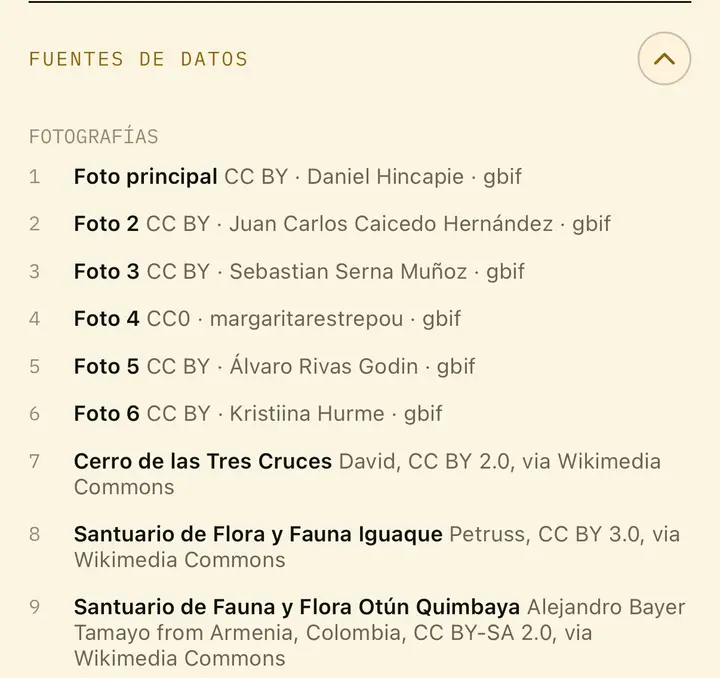
Capturas de la app en un iPhone, octubre de 2026. Fotos de la ficha: Daniel Hincapie y otros autores (CC BY y CC0, vía GBIF y Wikimedia Commons), con sus créditos en la sección de fuentes.
Algunas fichas también muestran
- Endémica: una etiqueta sobre la foto cuando la especie solo vive en Colombia.
- Introducida: dentro de una gincana, cuando la especie llegó de otra parte.
- Precaución: un aviso cuando la especie es tóxica o peligrosa.
- En revisión: mientras una persona revisa la ficha, un aviso pide precaución con la especie en el campo.
Cada gincana es una lista de fichas como esta: las especies que de verdad viven en un lugar.